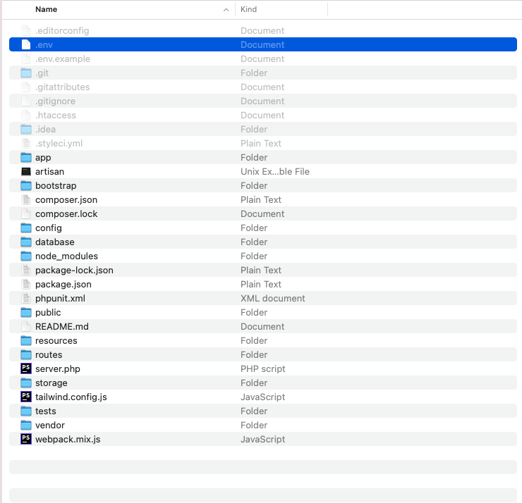

# Guide
The goal of POS is to give an easy way to Inventory and Stock Management.
# Technologies Used
This system uses multiple technologies to give the best possible experience.
- PHP with Laravel Framework
- MySQL 5.6+
- PHP 7.4+
- Javascript
- React
# Installation Guide
We tried our best to make the installation of the system as easy as possible. System Requirements It is assumed that you have primary knowledge Laravel installation knowledge since this application is built on Laravel.
# System Requirement
It is assumed that you have primary knowledge Laravel and JS application installation knowledge since this application is built on Laravel with JS.
You can read about laravel Requirements here (opens new window)
You need update below variables in php.ini file if you want to send bigger files (Optional).
upload_max_filesize = 50M
max_file_uploads = 50
post_max_size = 100M
# Setup InfyPOS System
If you have purchased the InfyPOS system then you will be able to find the zip named
dist.zip
If you want to setup InfyPOS into your local environment then you can take help from
here here.
Now if you want to setup InfyPOS on your server then you can directly copy the dist.zip
folder to your web root directory on server and the following steps:
# 1. Copy files to web server
Upload dist.zip to your web server's root (public_html) and extract it there.
# 2. Setup Default DB
- Open PHPMyAdmin on your server and do a login.

- Click on the Databases tab.

- Create a new database and specify a Database name of your choice and Click Create button.
- Now on the left, select the database (pos) OR the one that you have created.
- Click Import in the top menu
- Under Import, choose the default sql file from
dist/database/pos.sqland click button Go.
# 3. Setup environment .env file
- Open .env file from your server's root folder.

You need to change the following information into your environment (.env) file.
- APP_NAME - Name of your Application/Library System
- APP_URL - Change this URL with your server URL (including trailing path if you are putting it in sub folder or root website)
- DB_HOST - Put your database hostname here
- DB_PORT - Put your database port here if it does not default to 3306
- DB_DATABASE - Change it to your database name
- DB_USERNAME - Name of your database user
- DB_PASSWORD - Password of your database user
You will also need to set up mail configuration, you can read more about here for that setup based on mail service that you use.
- MAIL_MAILER
- MAIL_HOST
- MAIL_PORT
- MAIL_USERNAME
- MAIL_PASSWORD
- MAIL_ENCRYPTION
- MAIL_FROM_ADDRESS
- MAIL_FROM_NAME
If you want to store your files to direct your s3 bucket then you have to use following
.env variables.
You need to change FILESYSTEM_DRIVER and MEDIA_DISK value to
s3 when you are using AWS file storage.
- AWS_ACCESS_KEY_ID=
- AWS_SECRET_ACCESS_KEY=
- AWS_DEFAULT_REGION=us-east-1
- AWS_BUCKET=
- AWS_ENDPOINT=
- AWS_URL=
Or you can use your choice of storage driver to store your media assets if you want. All of your attachments will be placed into that.
And you should be ready to go.
# 4. Admin login
You can login as admin using below credentials.
Admin Credentials:
Email / Password : admin@infy-pos.com / 123456
# Setup InfyPOS into Local Environment
You can setup InfyPOS into your local by using both zip files, but we recommend to use dist file so you have to perform minimal steps.
Here are some steps to setup InfyPOS into your local environment :
# 1. Install xampp/wamp (if you don't have it).
# 2.
Create folder InfyPOS
- if you are using wamp then create InfyPOS folder under you_path_to_wamp/www/
- if you are using xamp then create InfyPOS folder under you_path_to_xamp/htdocs/
# 3. Unzip dist/src zip to InfyPOS folder
# 4. Point the domain to the uploaded folder
You need to create virtual host first to setup InfyPOS. You can find steps here to create virtual host.
- You can find steps here (opens new window) to create virtual host on
XAMPP. - You can find steps here (opens new window) to create virtual host on
WAMP.
Point your domain or subdomain to the InfyPOS folder.
Please note that, InfyPOS must be installed on a primary domain or subdomain. Installing on a sub-folder will not work, for example:
example.com/InfyPOS (Invalid)
localhost/InfyPOS (Invalid) if you are putting it in sub folder or root website)
example.com (Valid)
local.InfyPOS.com (Valid)
InfyPOS.test (Valid)
Open the link to the domain in the browser (Example: https://local.InfyPOS.com).
# Key Features and Concepts
Here are some Key Features and Concepts that InfyPOS provides.
# Users Management
It has the users' management, where you can create separate super admin users. that users will be able to access the POS system with same rights as super admin as we are creating them as super admin users.
# Dashboard
It has very beautiful dashboard view. which comes up with very informative data.
You can track sales / purchases and returns count from here. There is different kind of graph view are available too. its showing following charts and data.
- This week Sales & Purchase
- Top Selling Products - Year Wise
- Top Selling Products of current month
- Top 5 Customers
- Recent sales listing
- Stock Alert
# Customers
You can manage the customers by using this menu. you can create new customers and delete them or update the existing customers too.
Customers will be used into POS screen, where we can select them to which items they are purchasing.
# Warehouse
Warehouse will be used to manage the stocks of products.
Same product may available in different warehouse, so of course one product will have 10 stock in warehouse A, and 5 stock in warehouse B.
So in POS screen when you choose the warehouse it will return related available quantities.
# Products
You can manage your lists of products from this menu, you can create / edit or delete existing products via this interface.
While creating products you can specify the product price, its unit & the stock alerts that will help you to re-fill the products' quantity when stock is not available. you can also choose the barcode symbology to generate the barcode which you can later scan it into POS screen.
# Print Barcode
Sometimes its needed to have barcode on papers to scan it. that time you can use this feature.
By using this feature you can print same barcode with multiple times on paper. you have to select the warehouse then you have to choose the product and the number of quantities that you want to print on paper.
You can also preview the print and choose different types of paper sizes here.
# Brands
Brand will be used while creation of products, you can manage the lists of brands via this section.
You can also upload the brand logo.
# Product Categories
Product categories will be used while creation of product, you can create different kind of categories here and later it will be used when we create / update new product.
# Expense Categories
Expense categories will be used while we create new expense. you can create or update new categories from here.
# Expenses
To track your companies lists of expenses this menu will be most usefull. later you can prepare reports from this data.
You have to add the title of expense, and the warehouse and the expense category to create new expense, and yes expense date as well.
# Units
You can create different kind of units that will be used by products.
Units will be used to identify the product, either it will be in kg, or either it will be in pcs. you can define the name of the units and its short name too.
# Currencies
As we are supporting multiple currencies, this menu will be used for many customers that is not from india.
They can just add their own currency and choose it from the globals setting, so they can see their selected currency everywhere.
# Purchases
Purchases will be used to increase the available stock.
ks quantity. let's say warehouse A have product's quantity 5, and now we want to add 50 new quantity, you can use this functionality for that.
You have to select the same warehouse and the product in which you want to increase the quantity or we can say you want to purchase more quantities, do it and hit save.
You will now see the updated quantities.
# Purchase Return
In some case we may have to return the purchased products, so we can use this options to track the purchase returns.
Based on this later we are generating reports and displaying data into dashboard.
# Sales
Sales is kind of same as return, when we sale any product it will decrease the available quantity.
So let's say we have Product - A with quantity 50, and we are selling it with quantities 25, later we will have available quantities 25.
# Sale Return
its same as purchase return, when any sale will be returned it will affect the available quantities.
Number of returning product sales quantities will be increased into available quantities.
# Reports
Based of the stored data we are generating different kind of reports, which help you to determine the current state of your POS.
We have following reports available right now.
- Warehouse reports
- Sales reports
- Purchase Reports
- Stock Reports
- Top Selling products Reports
# Settings
By using this feature you can change the basic application settings. like change the Application name, address, logo and the favicon.
You can set email settings there and also use the clear cache option too.